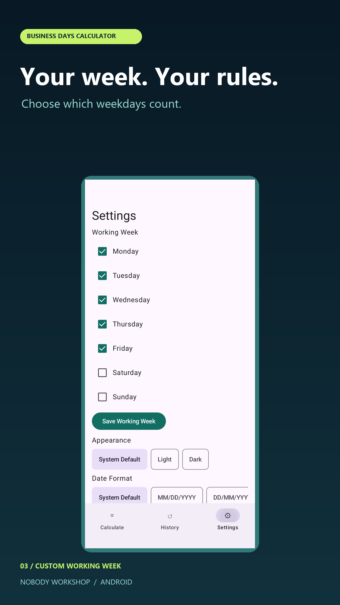

Business Days: Date Calculator
Count working days between dates or find a date by adding or subtracting workdays. Choose your working week, add excluded dates, and check exactly how the result was calculated.
Get it on Google Play

From a date question to a result you can check
Planning a project or a delivery estimate? Choose the start date and number of workdays, then set your working weekdays and any excluded dates. Review the resulting date and the days skipped before using the estimate.
- Choose business days between dates, add or subtract workdays, calendar days between dates, or add or subtract calendar days.
- Enter your dates or day offset. Select the working weekdays, manually excluded dates, and whether the start and end dates count.
- Read the result and expand the calculation details to check boundaries and skipped dates. Copy the result or reopen one of your five most recent calculations.
Before you give it a try.
Can I use a different working week?
Yes. Choose Monday–Friday, Sunday–Thursday, Monday–Saturday or your own combination of weekdays.
Are public holidays excluded automatically?
No. Add holidays, company closures or leave dates manually. Public holidays are not supplied or updated automatically.
Can I include or exclude the start and end dates?
Yes. Choose whether the boundary dates count, then expand the calculation details to check the rules applied.
Does it work offline, and do I need an account?
The core date tools work offline without an account or calendar permission. Calculations and settings stay on this device and do not sync.
Do I have to watch an ad to calculate a date?
No. Core calculations and explanations do not require an ad. The app contains banner ads; optional rewarded ads unlock Batch Calculator for the current session or hide banners for 30 minutes.
Can I use it to determine a legal deadline?
The app is a date calculator, not a legal deadline service. It does not automatically apply regional holiday rules or determine legal deadlines.
Where can I download Business Days: Date Calculator?
Use the Google Play link on this page. Availability depends on your country and device.
Does it contain ads?
Yes. The current Google Play listing declares ads. See the product privacy policy for details.
How can I get support?
Email service@nobodyworkshop.com with the product name and a short description of your question.
Made it part of your day?
Tell me what you think. The person who built it is listening.
Send honest feedback ↗